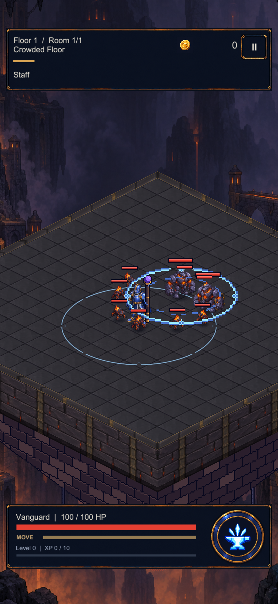
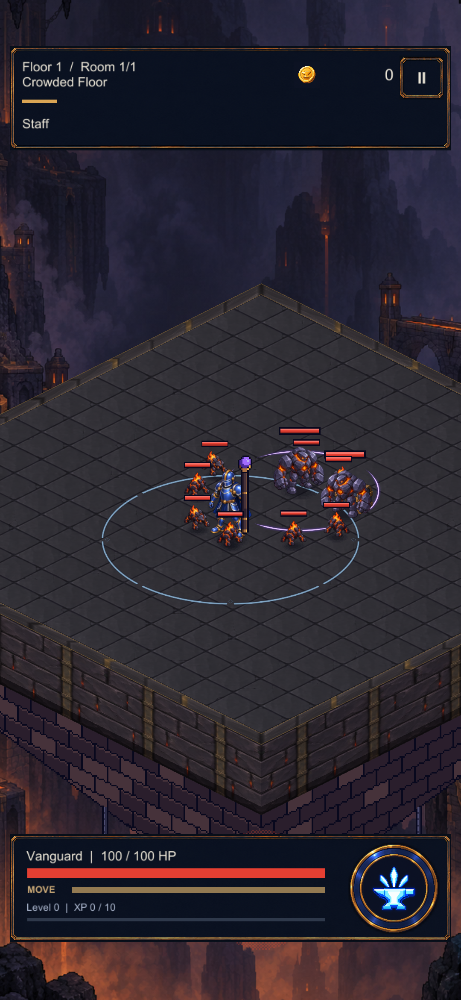
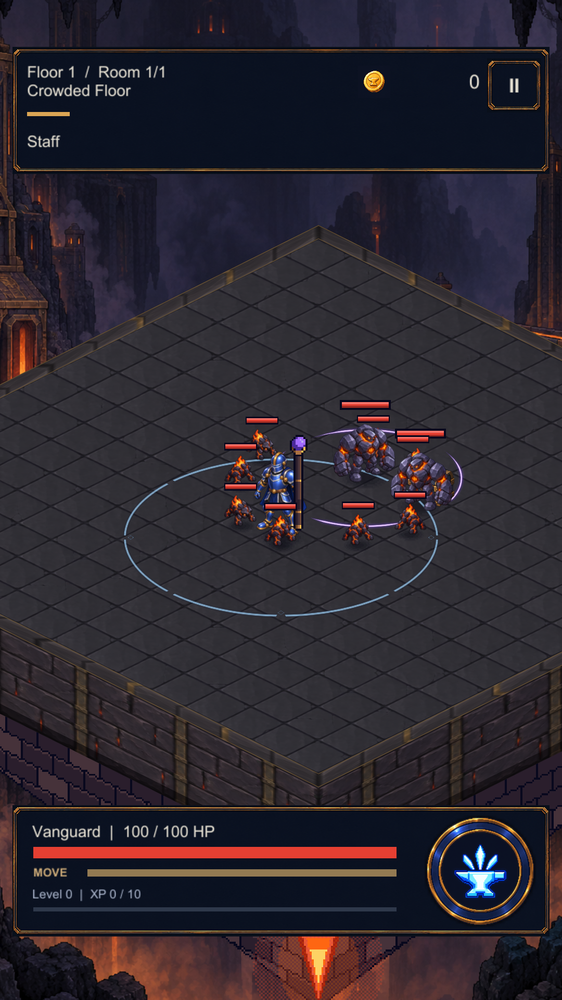

CRYPTFORGE / SANAT ÇALIŞMASI / 19 EYLÜL 2026
Staff için ayrı bir darbe dili
Hedefin ayaklarında açılan dört mor-beyaz yay. Merkez boş kalır; çizgi karakterlerin altından geçer. Kahramanın sekiz parçalı mavi yetenek halkasından hem biçimi hem rengiyle ayrılır.

Mevcut · kalın piksel halka / karakterlerin üzerinde
Aday · ince dört yay / karakterlerin altında
5 simülasyon karesi sonrası · yaklaşık 0,083 saniye
Bu küçük darbe, vuruş geri bildirimidir. Staff'ın tüm hasar menzilini göstermez; önceki efektin görsel boyutu korunmuştur. Hasar yarıçapı 3,5 birim olarak kalır.
Daha kısa telefon oranı: 1080 × 1920

Sonraki adım: seçilen çizgiyi tek ortak sprite ile çalışma zamanına almak; büyüme ve sönmeyi dönüşümle animasyonlandırmak. Ardından tam testler ve telefon kontrolü.
Teknik kayıt ve doğrulama sınırları